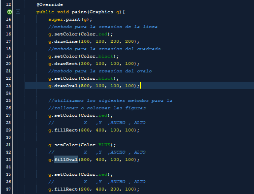

Java proporciona la clase Graphics, que permite dibujar elipses, cuadrados, líneas, mostrar texto y también tiene muchos otros métodos de dibujo. Para cualquier programador, es esencial el entendimiento de la clase Graphics, antes de adentrarse en el dibujo en Java.
La clase Graphics proporciona el entorno de trabajo para cualquier operación gráfica que se realice dentro del AWT.
Para poder pintar, un programa necesita un contexto gráfico válido, representado por una instancia de la clase Graphics. Pero esta clase no se puede instanciar directamente; así que debemos crear un componente y pasarlo al programa como un argumento al método paint().
El único argumento del método paint() es un objeto de esta clase. La clase Graphics dispone de métodos para soportar tres categorías de operaciones gráficas:
1) Dibujo de primitivas gráficas,
2) Dibujo de texto,
3) Presentación de imágenes en formatos *.gif y *.jpeg.
Además, la clase Graphics mantiene un contexto gráfico: un área de dibujo actual, un color de dibujo del Background y otro del Foreground, un Font con todas sus propiedades, etc.Los ejes están situados en la esquina superior izquierda. Las coordenadas se miden siempre en pixels.
Vamos a mostrar el primer ejemplo de graficacion en java primero procederemos a importar las librerias correspondientes creamos el objeto "ventana" de la clase "JFrame" para la creacion de la ventana y hacerla visible
Despues procedemos a la realizacion del metodo paint con la libreria GRAPHICS de ja y le ponemos una variable para interacionas y el codigo con las cordenadas dibuja las rectas en la ventana de java
aqui podemos aprecias los metodos para la creacion de un rectangulo al igual que la de un circulo al igual que los metodos que se utilizan para colorear las figuras tanto en contorno como rellenas
